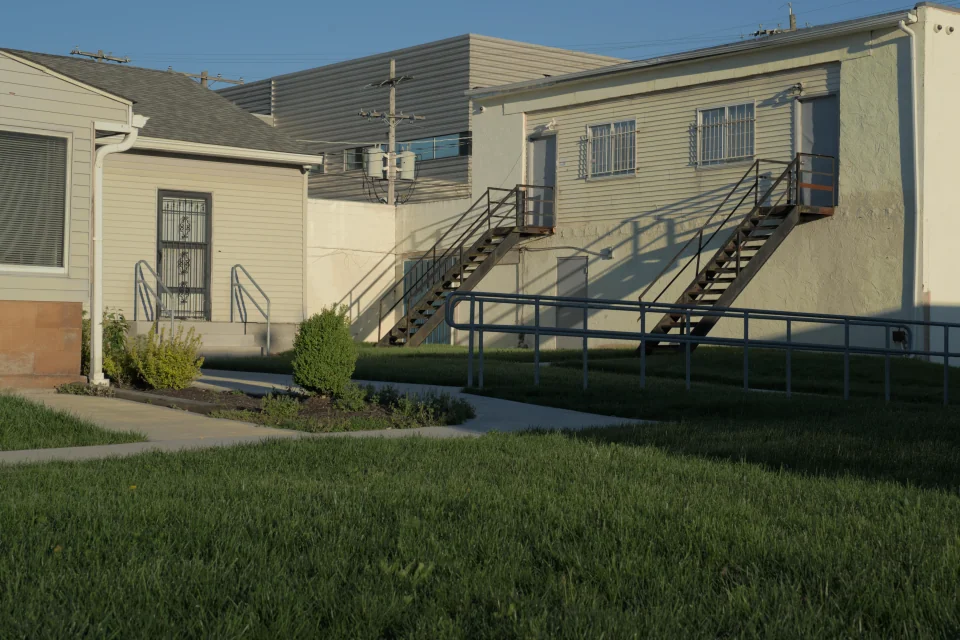
April 2024 in Columbus, OH.
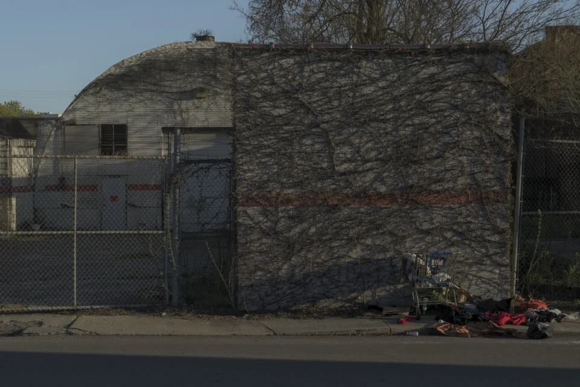
April 2024 in Columbus, OH.
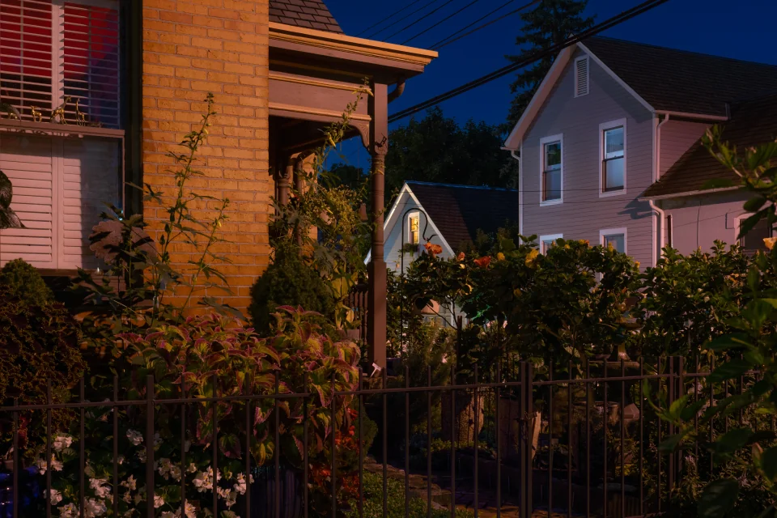
September 2023 in Columbus, OH.
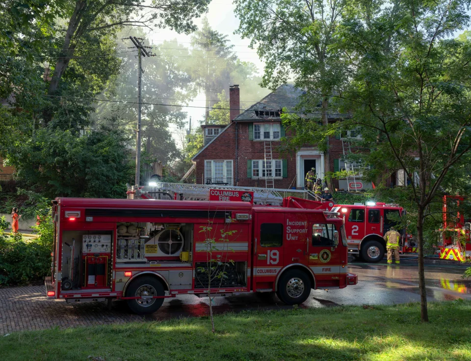
August 2023 in Columbus, OH.
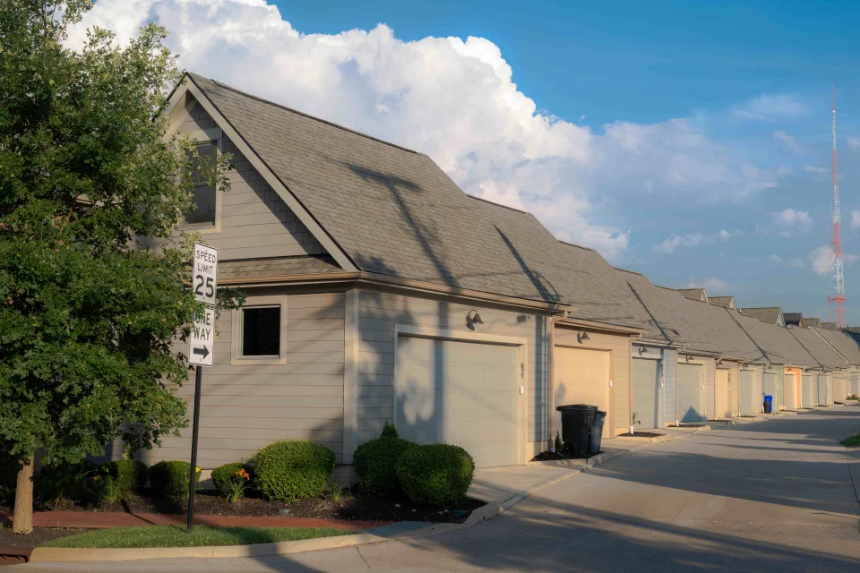
August 2023 in Columbus, OH.
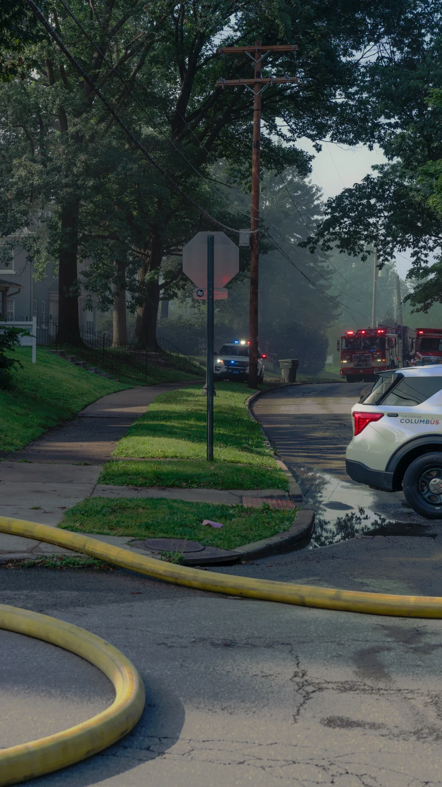
August 2023 in Columbus, OH.
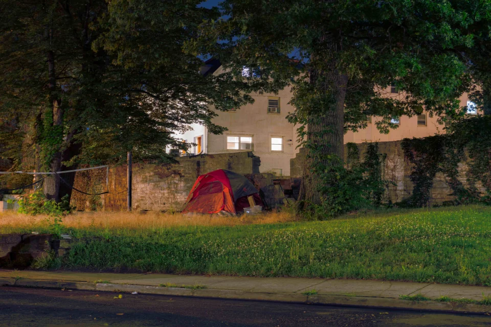
July 2023 in Columbus, OH.
July 2023 in Columbus, OH.
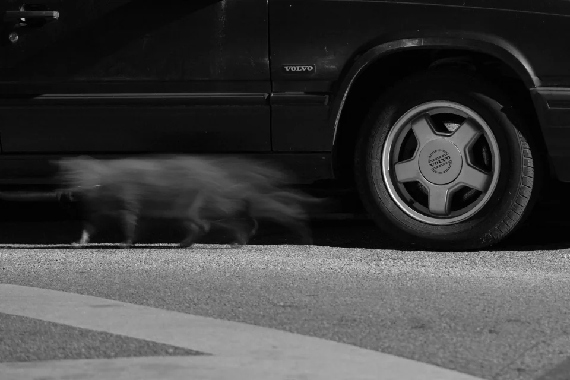
July 2023 in Columbus, OH, USA.
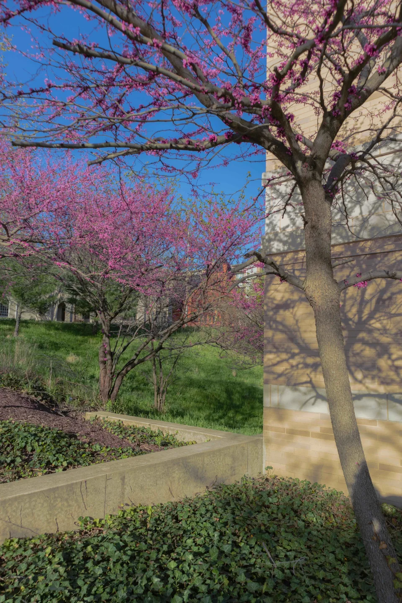
2023 in Youngstown, OH.
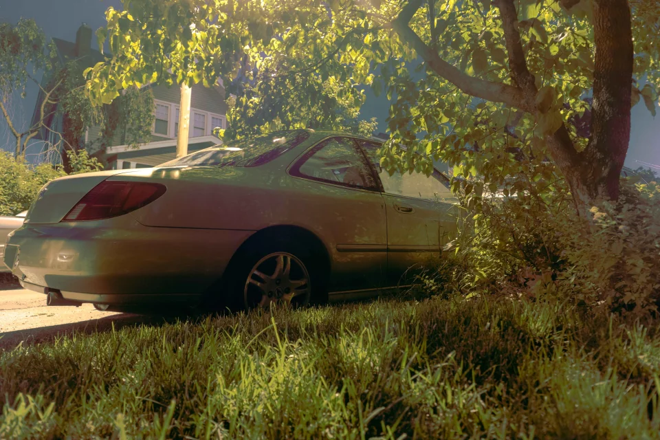
July 2022 in Columbus, OH.
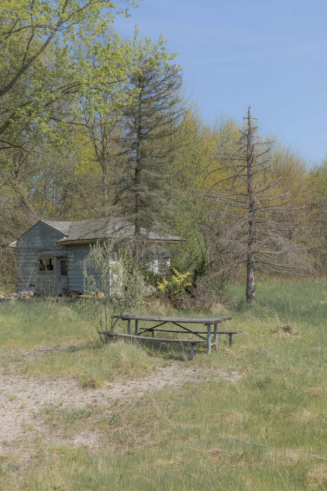
May 2022 in Warren, OH.
March 2022 in Youngstown, OH, USA.

July 2021 in Conneaut, OH.

May 2021 in Conneaut, OH.
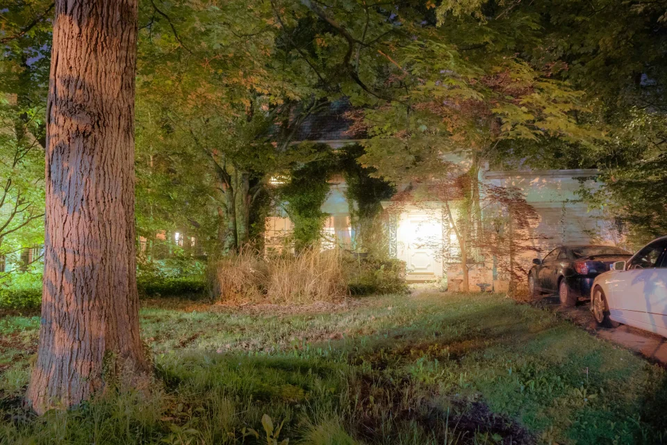
May 2021 in Youngstown, OH.

March 2021 in Columbus, OH.
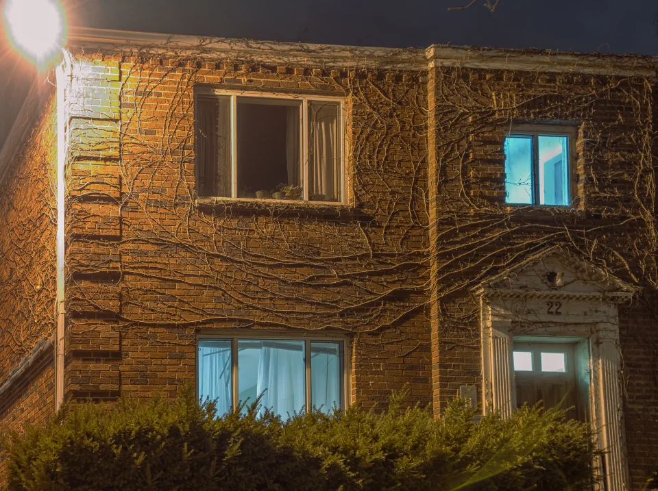
March 2021 in Columbus, OH.

February 2021 in Columbus, OH.

January 2021 in Youngstown, OH, USA.
December 2020 in Columbus, OH.
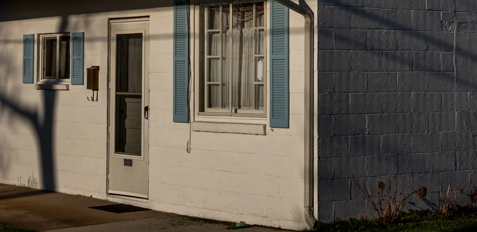
April 2020 in Conneaut, OH.